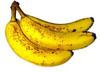
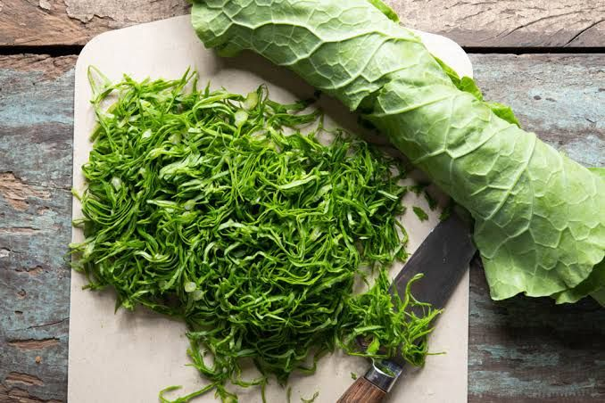
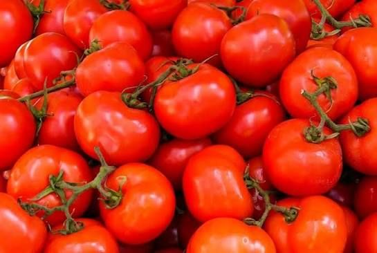
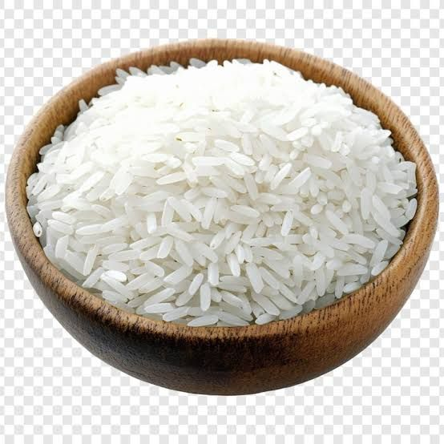
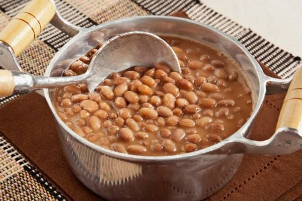
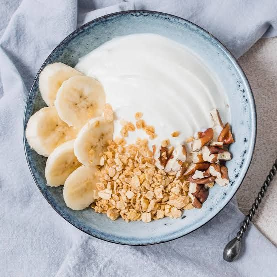
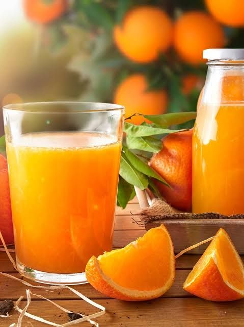
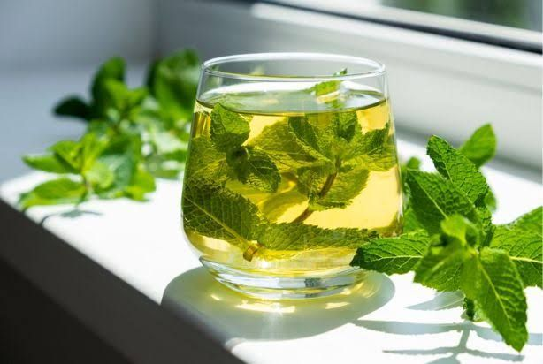

Morango
Doce e perfumado, colhido no ponto.
R$ 12,90 / bandeja
Tudo orgânico, de época e colhido por produtores parceiros. Escolha uma categoria:
Doce e perfumado, colhido no ponto.
R$ 12,90 / bandeja

Madura na medida, ótima para o café da manhã.
R$ 6,50 / kg

Folhas crocantes, cultivadas sem veneno.
R$ 4,50 / maço

Folha macia, ideal para refogar.
R$ 5,00 / maço

Raiz doce e firme, direto da terra.
R$ 7,90 / kg

Suculento, perfeito para saladas e molhos.
R$ 9,80 / kg

Grãos inteiros, ricos em fibras.
R$ 11,90 / kg

Cozinha rápido e fica bem cremoso.
R$ 10,50 / kg

Fresco, feito com leite de vacas criadas a pasto.
R$ 34,00 / peça

Sem açúcar e sem conservantes.
R$ 8,90 / 500 g

Integral, prensado a frio.
R$ 14,00 / litro

Folhas secas naturalmente, aroma marcante.
R$ 9,50 / 40 g